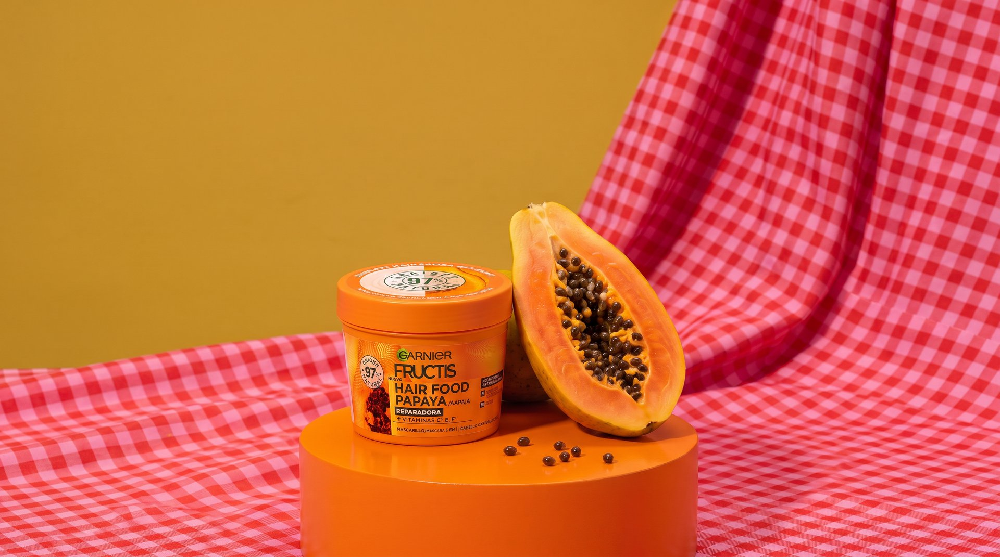
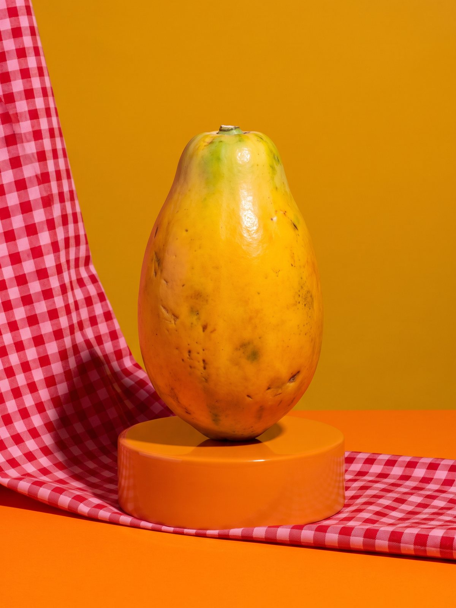
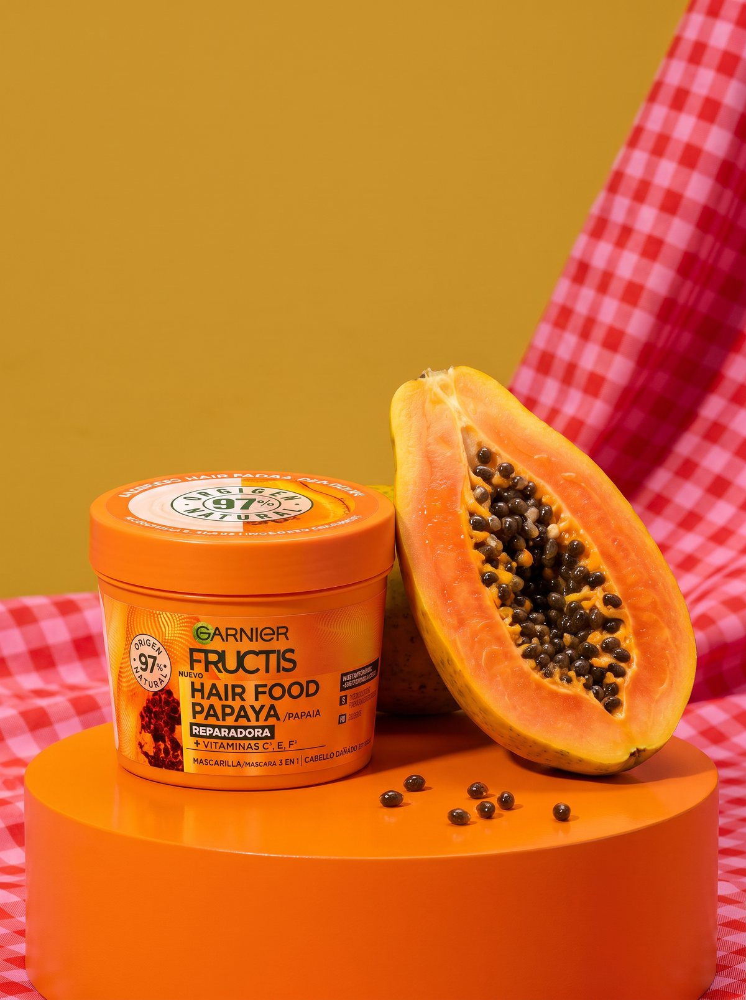
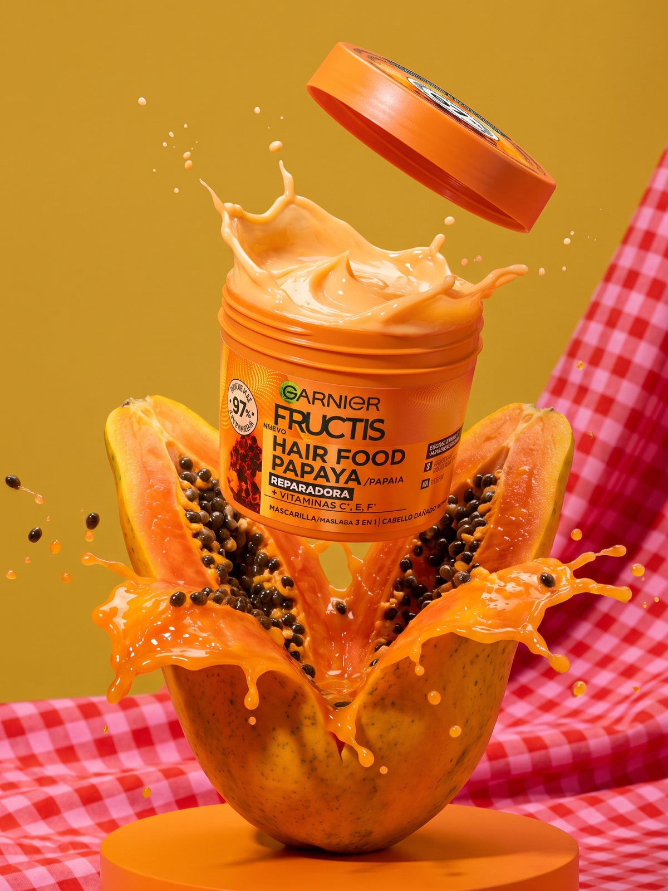
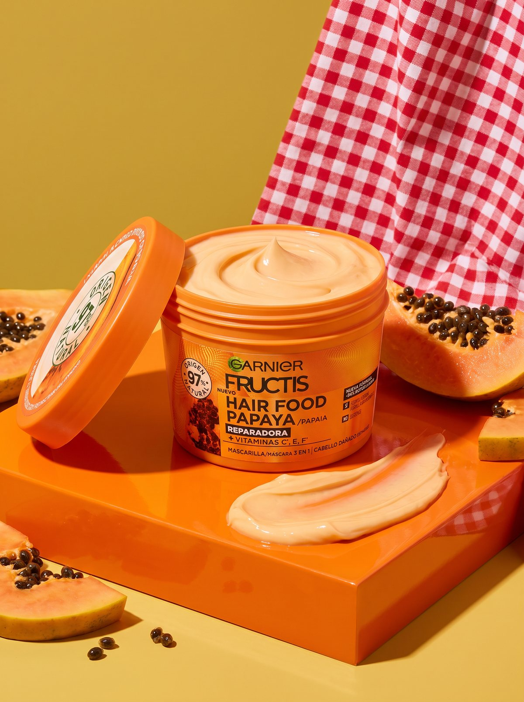
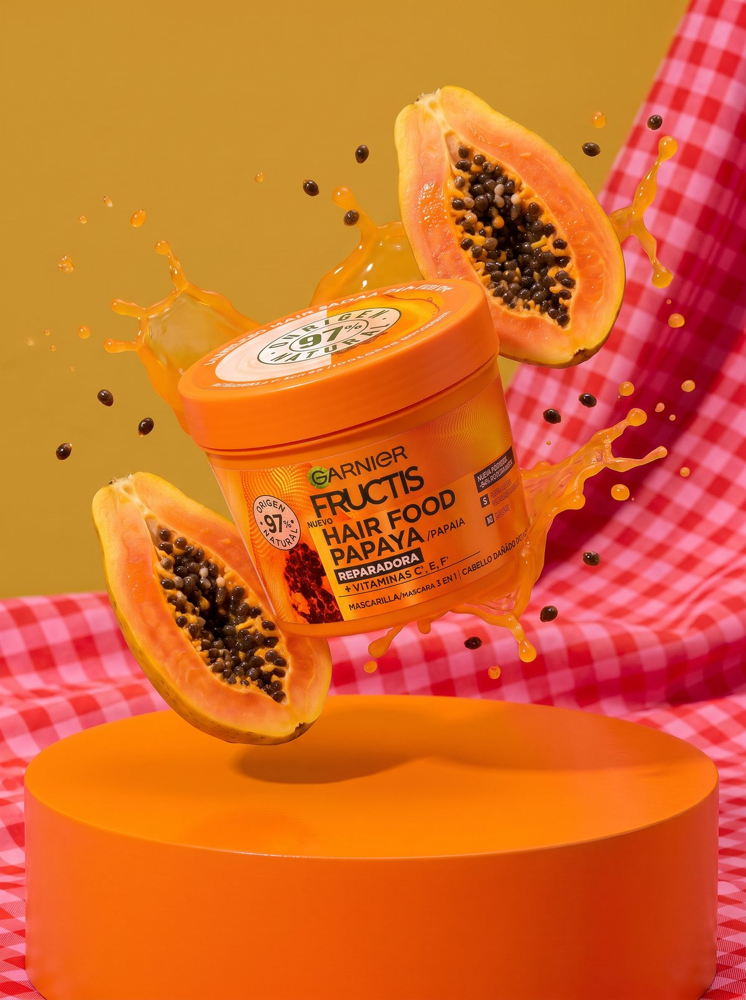
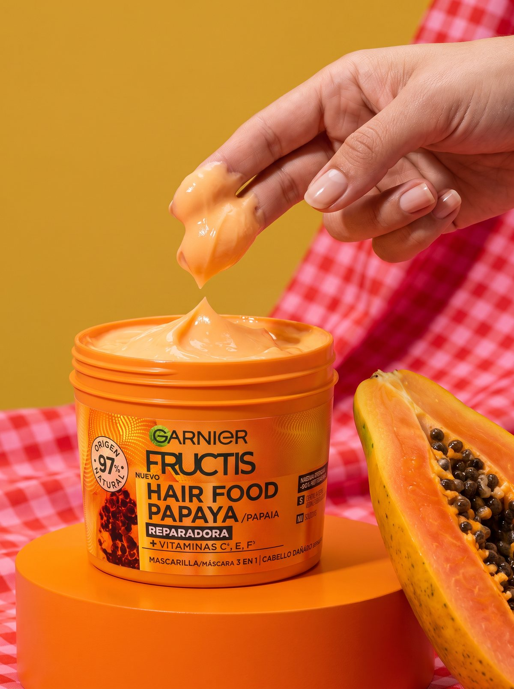
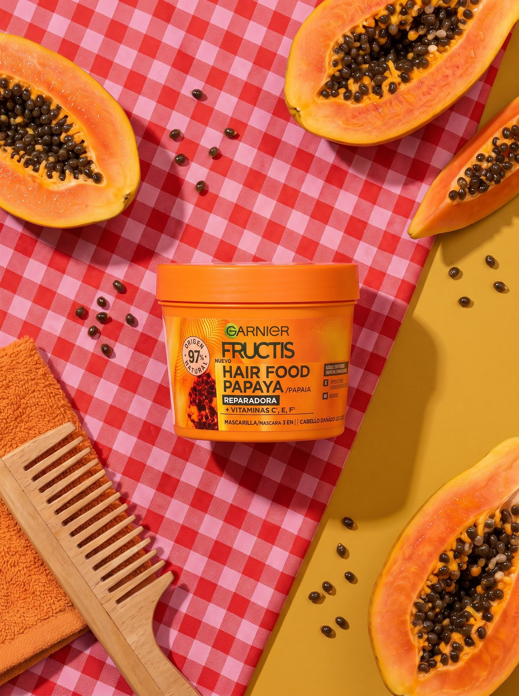
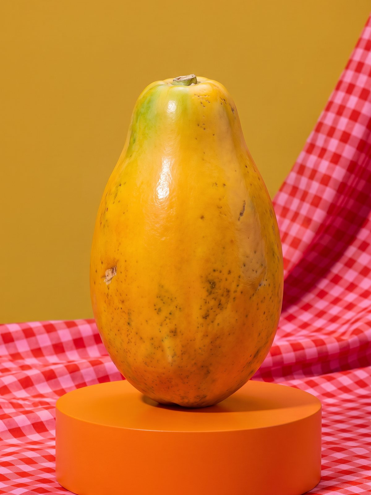
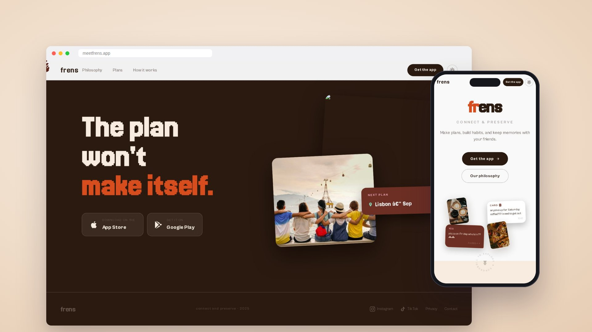

Garnier Hair Food Papaya
A conceptual product campaign for Garnier Fructis Hair Food Papaya, created entirely with AI: studio photography and animated loops.
I directed a full product shoot without a camera: a bold set with a mustard backdrop, red gingham cloth and a glossy orange podium, where the real papaya is the star next to the mask.

- Client
- Garnier (concept)
- Service
- AI Photography & Video
- Year
- 2026
Fresh papaya, studio style
The series moves from the whole fruit to the product bursting out of it, the creamy texture, a levitation shot and a flat lay, and then comes alive in short animated loops for social media.
Tools used
- + Magnific
- + Nano Banana Pro
- + Kling
- + Photoshop
Photography








Creative process
- 1. Art direction. Set design, palette and shot list inspired by the product colors.
- 2. AI photography. Image generation with the real product as reference, keeping the label faithful.
- 3. Animation. Seamless loops animated from the stills for reels and stories.
Animations
Next project
Frens
